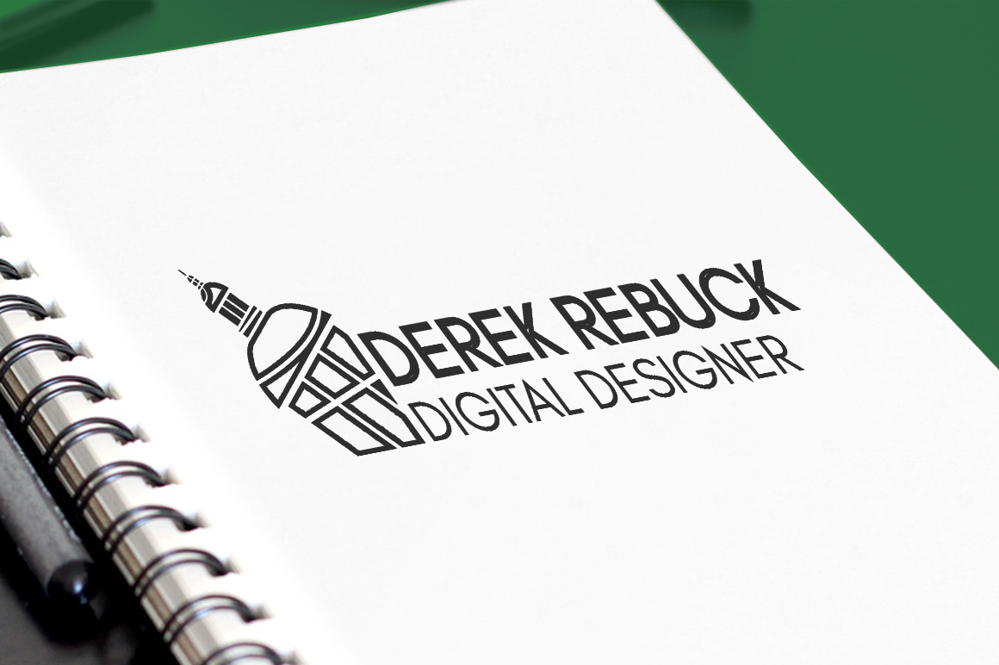
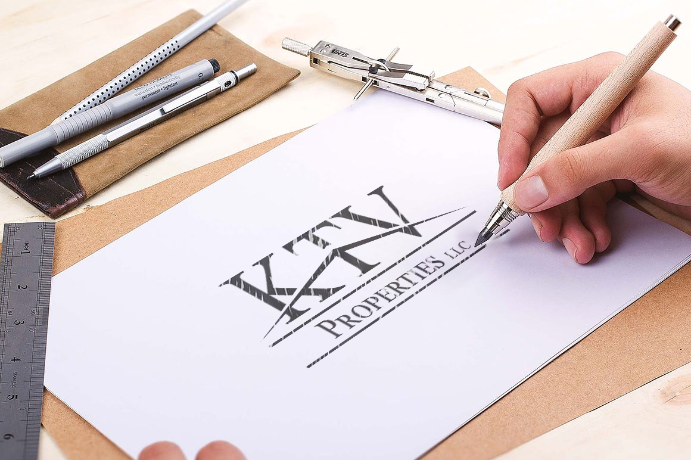

Understand the context
Who is the audience? What needs to be communicated? What should someone understand, feel or do when they are finished?
I like turning messy ideas into something clear, useful and visually strong.
I’m Derek Rebuck, a multidisciplinary designer based in the DMV. Graphic design is my foundation, but my work has expanded into web, UI/UX, communications, video and data.


I’ve spent more than a decade working across visual design, websites, digital communications, video and data. Most of my career has involved moving between disciplines instead of staying in a single lane.
That range is useful because the right answer is not always a logo, a website or an infographic. I like understanding what the audience needs, what the organization is trying to communicate, and where those two things are not quite connecting yet.
I also studied political science alongside graphic design, which shaped the research, writing and analytical side of how I approach creative work.
I tend to organize the problem before I start designing the solution.
Who is the audience? What needs to be communicated? What should someone understand, feel or do when they are finished?
I’m good at taking scattered ideas and turning them into a clear hierarchy, whether that becomes a page, campaign, visual system or interface.
Accessibility, mobile behavior, readable type and practical constraints are part of the design from the beginning, not a check at the end.
My experience spans federal service, health communications, the courts, real estate, manufacturing, education, startups and independent work.
View resumeU.S. Court of Appeals for the Federal Circuit
National Institute on Aging, NIH
U.S. Patent and Trademark Office
Administrative Office of the U.S. Courts
Saenger Group, Tex Visions, Volute, Shippensburg University and nonprofit work